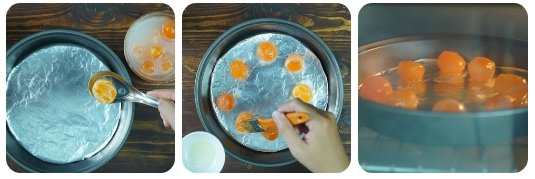

Salted egg sponge cake is considered a favorite fast food for many people, especially teenagers. Certainly, few people know that this cake is originated from Vung Tau province.
Salted egg sponge cake appeared in Vung Tau in the 50s in 20 centuries, it is combined by traditional Vietnamese cuisine and attractive Western cuisine. Due to its special taste and eye-catching appearance, this cake has become more and more common not only in Vung Tau but also in HCMC, Ha Noi City, and other regions.
Sponge Cake (a round mold; 15-18cm diameter)
Cheese Sauce and Salted Egg
Put egg whites into a bowl. Use egg beater at low speed until large bubbles appear, add salt and cream of tartar. Continue to beat until bubbles become smaller, mixture is smooth and same like soap bubbles, add sugar.
At the same time, add sugar slowly and beat egg whites at high speed. Continue until mixture becomes solid and smoother, slow the beater down.
Eggs need beating until it becomes a smooth paste, not too hard. When you lift the stick, it should have a cone shape of egg paste.
Note: to make sponge cake delicious, egg whites should be kept in medium room’s temperature which does not contain impurities such as butter, cooking oil, yolks. – A bowl and stick should be cleaned and dry, no butter, cooking oil and yolks…
Note: you should not beat too long, because it makes bubbles burst, and sponge cakes would be hard and difficult to bloom.
Line a piece of parchment paper or white paper at the bottom of the pan to make cakes. Pour the flour into the mold.
Tap the mold on the table a few times to make the foam burst. Bring to grill at 175 degrees C or 165 degrees C, two rounds for 25-35 minutes. Cooked cake is that when you gently press on the cake, you see the dent immediately inflates again.
Process salted egg without fishy taste.
Wash yolks into cold water and wine to reduce its smell. Put a piece of paper on the tray, arrange yolks, spread a layer of cooking oil on the surface of yolks.
Turn on oven at 165 degrees Celsius, put the tray of yolks into the oven. Roast for 5 minutes, and take it out. Cool yolks down, cut each yolk into 2 pieces.
